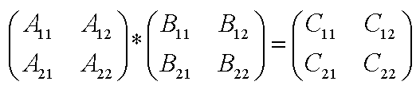

Пусть A, B — две квадратные матрицы над кольцом R. Матрица C получается по формуле:
C=A*B, где A,B ∈ R2nx2n
Если размер умножаемых матриц n не является натуральной степенью двойки, мы дополняем исходные матрицы
дополнительными нулевыми строками и столбцами. При этом мы получаем удобные для рекурсивного умножения размеры, но
теряем в эффективности за счёт дополнительных ненужных умножений.
Разделим матрицы A, B и C на равные по размеру блочные матрицы:

Для умножения матриц алгоритм Штрассена использует семь
формул. Эти формулы чрезвычайно неестественны и, к сожалению, в оригинальной статье
Штрассена не объясняется, как он пришел к ним. Замечательно, что как сами формулы,
так и их использование не требуют, чтобы умножение элементов матриц было коммутативным.
Это означает, в частности, что сами эти элементы могут быть матрицами, а значит,
алгоритм Штрассена можно применять рекурсивно. Вот формулы Штрассена:
| P1 = (A11 + A22)*(B11
+ B22);
|
P5 = (A11 + A22)*B22; |
| P2 = (A21 + A22)*B11; |
P6 = (A21 - A11)*(B11
+ B12);
|
| P3 = A11*(B12
- B22);
|
P7 = (A21 - A22)*(B21
+ B22);
|
| P4 = A22*(B21
- B11);
|
|
Теперь элементы матрицы C могут вычисляться
по формулам:
| C11 = P1 + P4
- P5 + P7;
|
C12 = P3 + P5; |
| C21 = P2 + P4; |
C22 = P1 + P3
- P2 + P6.
|
При умножении двух 2х2-матриц алгоритм
выполняет 7 умножений и 18 сложений. Экономия не видна: мы получили 14 сложений
в обмен на одно умножение в стандартных алгоритмах. Анализ общего случая показывает,
что число умножений при перемножении двух NxN-матриц приблизительно равно N2.81,
а число сложений 6N2.81 - 6N2. При умножении двух 16х16-матриц алгоритм Штрассена
экономит 1677 умножений за счет дополнительных 9138 сложений.
Сводя три результата воедино, мы получаем следующую картину:
|
|
Умножения
|
Сложения
|
|
Стандартный алгоритм
|
N3
|
N3 - N2
|
|
Алгоритм Штрассена
|
N2.81
|
6N2.81 - 6N2
|
На практике алгоритм Штрассена применяется
редко: его использование требует аккуратного отслеживания рекурсии. Важность его
состоит в том, что это первый алгоритм, умножение матриц с помощью которого требует
менее, чем N3 операций. Работа над повышением эффективности матричного умножения
и поиском возможных нижних оценок его сложности продолжается.